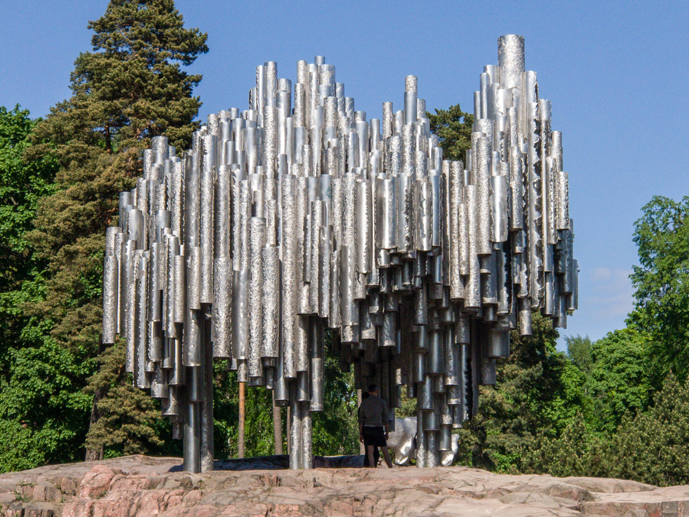
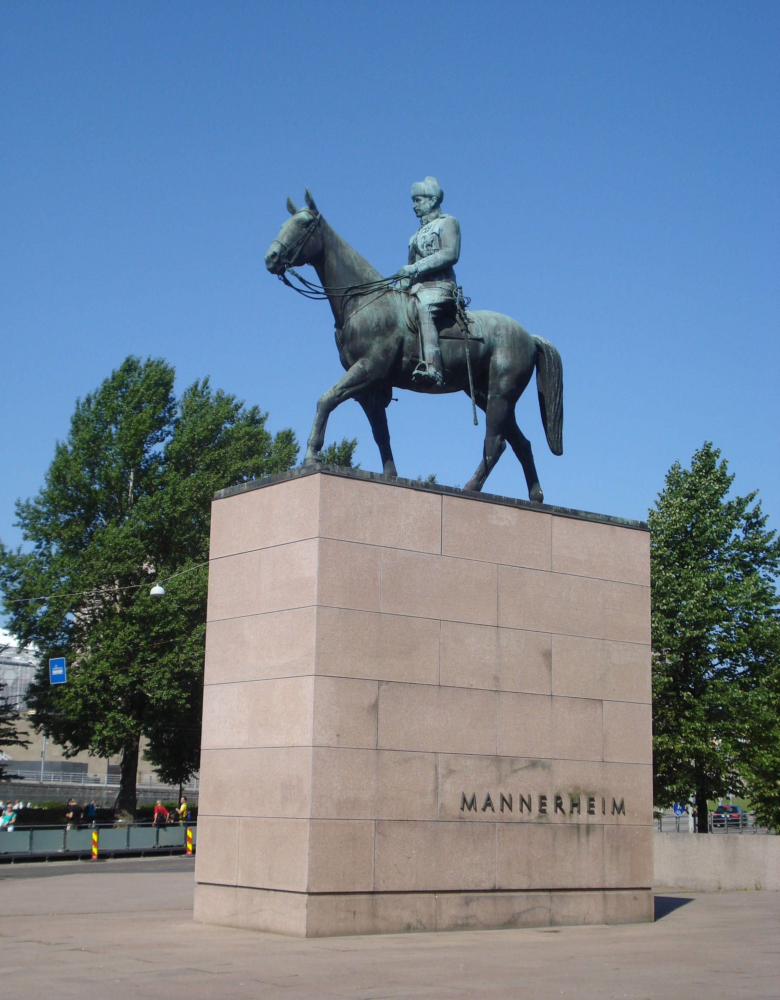
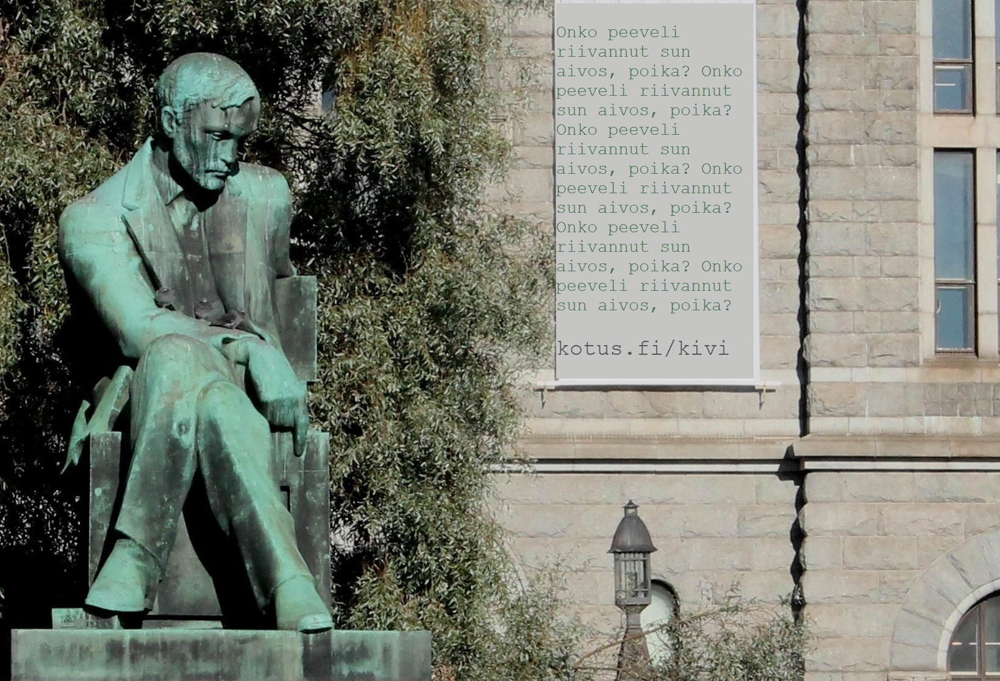
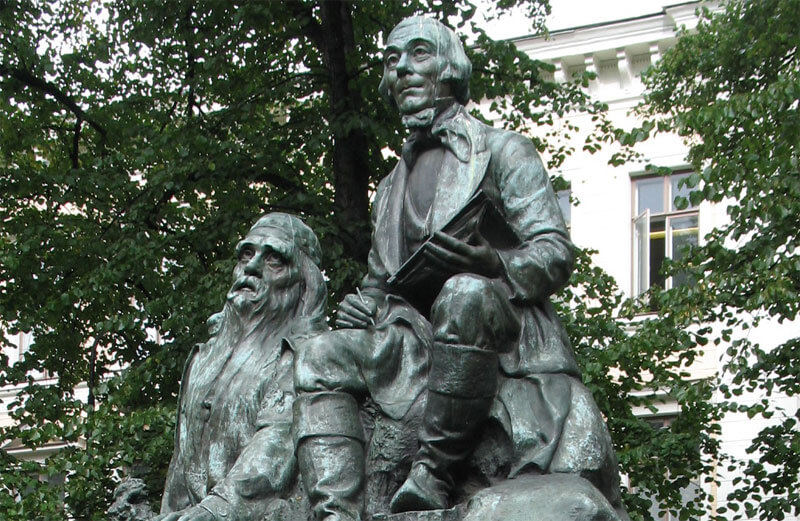
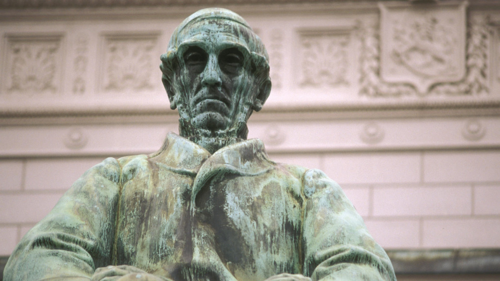
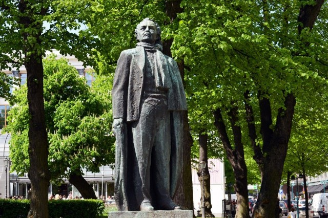
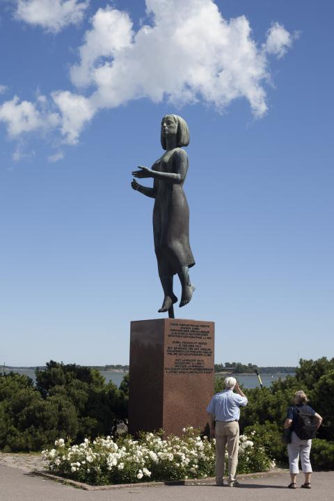
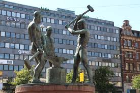

Monumentit/Patsaat
Sibeliusmonumentti
"Sibeliuksen puistossa on maailmankuulun säveltäjän Jean Sibeliuksen (1865-1957) muistomerkki, Eila Hiltusen käsialaa vuodelta 1967. Sibelius-monumentti paljastettiin 7. syyskuuta 1967."
Katso täältä lisää!Marsalkka Mannerheim
"Vapaaherra Carl Gustav Emil Mannerheim (1867-1951) oli Suomen marsalkka, valtionhoitaja (1918-19) ja tasavallan presidentti (1944-46). Sotilaallisten ja valtiomiesansioidensa vuoksi Mannerheim on Suomen 1900-luvun historian merkittävimpiä hahmoja. Hänen syntymäpäivänään 4. kesäkuuta on vietetty puolustusvoimain lippujuhlapäivää vuodesta 1942."
Katso täältä lisää!Aleksis Kiven patsas
"Aleksis Kivi (1834-1872) on Suomen kansalliskirjailija. Wäinö Aaltosen (1894-1966) tekemä pronssinen muistopatsas paljastettiin 10.10.1939. Patsaan valmistumista oli edeltänyt kaksivaiheinen veistoskilpailu 1928-30."
Katso täältä lisää!Elias Lönnrotin muistomerkki
"Suomalaisen Kirjallisuuden Seura järjesti Lönnrotin muistomerkkikilpailun 1899. Emil Wikström (1864-1942) sai veistoksen tehtäväkseen."
Katso täältä lisää!J.V.Snellmann
"Snellmanin muistomerkistä järjestettiin kilpailu vuonna 1913 ja sen voittivat yhteisellä ehdotuksella Emil Wikström (1864-1942) ja Eliel Saarinen (1873.1950)."
Katso täältä lisää!Eino Leino
" Veistos on Leppäsen tuotannolle luonteenomaisesti ekspressiivinen ja tehokasta luonteikkuutta hakeva. Pronssinen muistomerkki on jalustoineen 4,2 metriä korkea."
Katso täältä lisää!Rauhan patsas
"Tämän rauhanpatsaan pystytti Suomen kansa rauhanomaisen rinnakkaiselon ja Suomen ja Neuvostoliiton ystävyyden vertauskuvaksi 6.4.1968."
Katso täältä lisää!Kolmen sepän patsas
"Pro Helsingfors -säätiö tilasi patsaan ja lahjoitti sen Helsingin kaupungille. Veistos paljastettiin 2. päivänä joulukuuta 1932."
Katso täältä lisää!